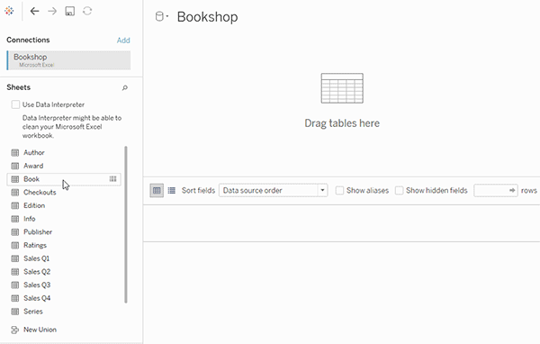
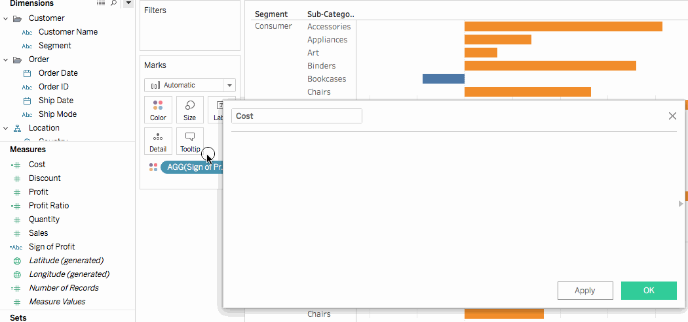
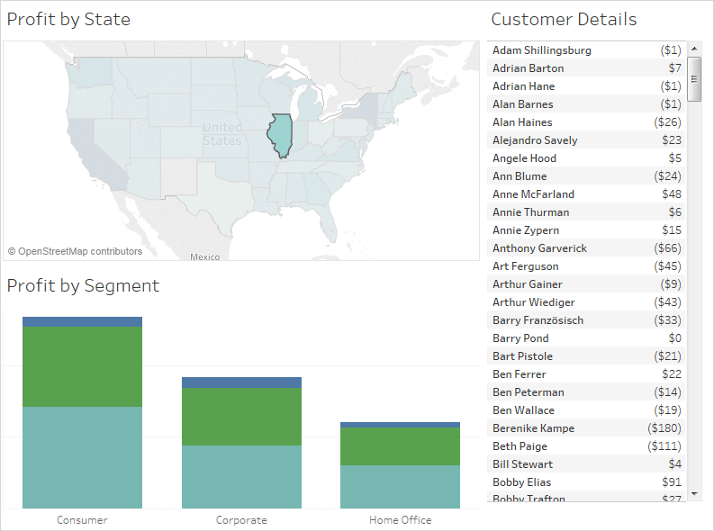
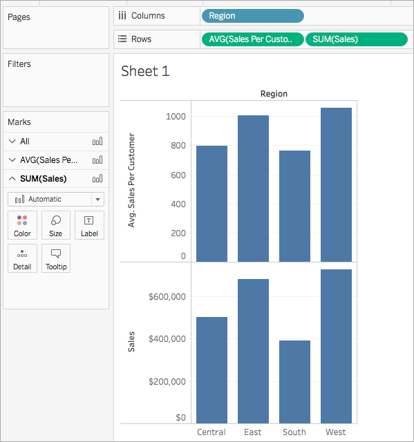
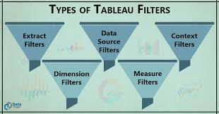

Understanding Tableau as a Financial Presentation Layer
Tableau should be viewed not as a data transformation tool, but as a highly optimized presentation layer designed to translate structured financial data into actionable insight. Its strength lies in its ability to connect to already-prepared datasets and render them into interactive, real-time dashboards that support rapid decision-making. When used correctly, Tableau becomes the final step in a broader financial data pipeline rather than the system where data preparation begins.
For accounting and finance teams, this distinction is critical. Clean, well-structured data sourced from ERP systems, data warehouses, or automation pipelines enables Tableau to operate at peak efficiency. Poorly structured inputs, on the other hand, result in unreliable dashboards and degraded performance. As such, effective Tableau usage requires both technical awareness and disciplined data architecture upstream.
The sections below outline the most impactful Tableau features for financial workflows, with a focus on building scalable, repeatable systems rather than one-off reports. Each concept is presented with practical implementation logic and guidance for adapting it to real-world accounting environments.

1. Building a Financial Data Model Using Relationships
Financial datasets rarely exist in isolation. General ledger activity, vendor records, budget data, and operational metrics are typically stored across multiple systems and tables. Tableau’s relationship model allows these datasets to remain logically connected without requiring rigid joins, preserving both flexibility and performance.
This approach enables users to analyze data at different levels of granularity without duplicating records or inflating totals. For example, a single dataset can support both entity-level summaries and transaction-level drilldowns without restructuring the underlying data. This is particularly valuable in financial environments where accuracy and traceability are critical.
When implemented correctly, relationships allow Tableau to dynamically determine how data should be combined based on the context of the visualization. This reduces the need for manual data modeling while ensuring that financial metrics remain consistent and reliable across reports.

2. Using Calculated Fields to Standardize Financial Logic
Financial reporting depends on consistent logic. Calculated fields allow users to define standardized rules directly within Tableau, ensuring that metrics such as revenue classifications, expense groupings, and net income calculations are applied uniformly across all visualizations.
By embedding financial logic into calculated fields, organizations reduce the risk of inconsistent reporting caused by manual adjustments or spreadsheet-based calculations. This is especially important in environments where multiple users interact with the same dataset.
Over time, these calculated fields form a reusable library of financial definitions that can be applied across dashboards, improving both efficiency and accuracy. Proper naming conventions and documentation are essential to ensure these calculations remain understandable and maintainable.

3. Designing Interactive Financial Dashboards
Static financial reports limit insight by presenting information in a fixed format. Tableau dashboards enable users to interact with data dynamically, filtering by entity, time period, or account structure to explore trends and identify anomalies in real time.
Well-designed dashboards strike a balance between clarity and depth. Executive-level views should emphasize high-level performance indicators, while more detailed views should allow analysts to investigate underlying transactions and drivers of variance.
By leveraging dashboard actions, filters, and layout design, organizations can create reporting environments that adapt to the needs of different users without requiring multiple separate reports. This significantly improves both usability and scalability.

4. Leveraging LOD Expressions for Advanced Analysis
Financial analysis often requires calculations at different levels of detail than what is displayed. LOD expressions allow users to define calculations that operate independently of the current view, enabling more advanced comparisons and metrics.
This is particularly useful for building ratios such as percentage of total revenue, fixed cost allocations, or entity-level summaries within a detailed transaction view. Without LOD expressions, these calculations would require extensive preprocessing outside of Tableau.
When used correctly, LOD expressions provide a powerful way to enhance analytical depth while maintaining clean and intuitive dashboards. However, they should be implemented thoughtfully to avoid unnecessary complexity.

5. Optimizing Performance with Extracts and Filters
Performance is a critical factor in financial reporting. Large datasets can significantly slow down dashboards if not managed properly. Tableau extracts and data source filters allow users to limit the volume of data being processed, improving speed and responsiveness.
By filtering data to relevant time periods, active entities, or specific business units, organizations can reduce unnecessary processing overhead. This not only improves performance but also enhances usability by focusing users on the most relevant information.
Scheduled extract refreshes further streamline reporting workflows by ensuring that dashboards are always up to date without requiring manual intervention. This supports a more automated and reliable reporting environment.